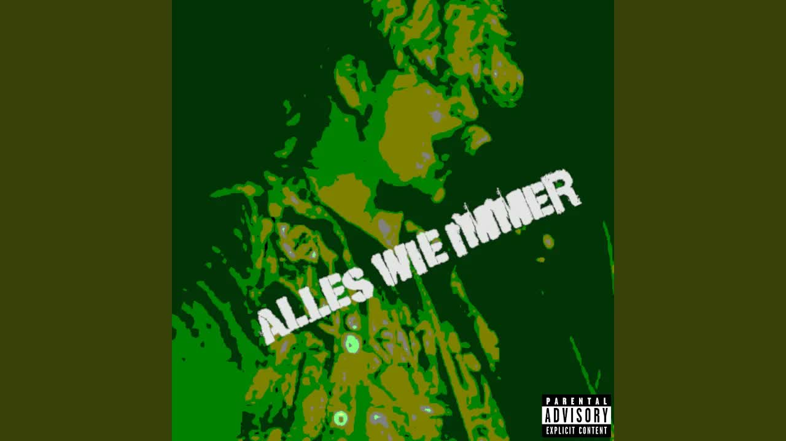

Review
WASTED ZIPPO - Alles wie immer

WASTED ZIPPO war mir komplett vom Radar gerutscht.
Dabei habe ich am 3. November 2024 schon einmal kurz über das Projekt berichtet. In den RandaleNEWS. Ab Minute 7:05, falls jemand überprüfen möchte, ob ich damals bereits Unsinn erzählt habe.
Danach habe ich Wasted Zippo irgendwie aus den Augen verloren.
Nun läuft „Alles wie immer“ und nach wenigen Sekunden weiß ich wieder, warum ich damals hingehört habe.
Diese Stimme.
Immer noch schön rau.
Traumhaft romantisch.
Zum Verlieben.
Falls Liebe bei euch klingt, als hätte ein Paketlieferwagen auf dem Bordstein ein Frettchen überfahren.
Ich mag solche romantischen Bilder.
Und solche Klänge.
Bei den Credits fällt dann auf, wie viel davon tatsächlich an einer Person hängt.
Background Vocals: Wasted Zippo.
Bass: Wasted Zippo.
Gitarre, Gesang und Schlagzeug: Wasted Zippo.
Produktion, Mix und Mastering ebenfalls: Wasted Zippo.
Phillip Böhmichen steht als Songwriter und Komponist dabei. Ein Konzertbericht bezeichnet Wasted Zippo außerdem ausdrücklich als Ein-Mann-Projekt.
Andere Bands brauchen für diese Aufgaben mehrere Leute, zwei Proben und eine WhatsApp-Gruppe, in der niemand auf die Terminumfrage reagiert.
Wasted Zippo braucht offenbar nur Phillip.
Live steht er mit E-Gitarre auf der Bühne, während der Rest vom Band kommt. Bei „Alles wie immer“ klingt das trotzdem nicht nach einer Notlösung. Das Schlagzeug treibt den Song voran, die Gitarren raspeln ordentlich und darüber liegt diese herrlich kaputte Stimme.
Dass Böhmichen das Ding praktisch allein zusammengebaut hat, hört man dem Song erstaunlich wenig an. Die einzelnen Aufgaben stehen nicht nebeneinander. Am Ende kommt eine geschlossene Ladung rauer Deutschpunk heraus.
2024 kurz entdeckt.
Dann aus den Augen verloren.
2026 wiedergefunden.
Alles wie immer.
„Alles wie immer“ auf YouTube
RandaleNEWS vom 3. November 2024 ab Minute 7:05
Wasted Zippo auf Spotify